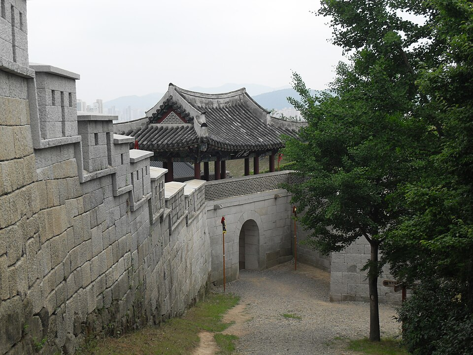

지역·학습팁
부산 동래구 검정고시 — 남은 시간이 짧을 때 점수부터 만드는 순서

준비를 늦게 시작한 분들이 가장 먼저 하는 일이 “처음부터 차근차근”입니다. 그런데 남은 기간이 짧을 때 이 방법은 거의 항상 앞부분만 몇 번 보다가 끝납니다. 동래구 검정고시를 짧은 기간에 준비한다면 순서를 바꿔야 합니다. 범위가 아니라 점수부터 봅니다.
1. 목표를 과목 단위로 쪼갭니다
검정고시는 전 과목 평균 60점 이상이면 합격입니다. 모든 과목을 60점으로 맞출 필요가 없다는 뜻이에요. 원래 자신 있던 과목을 80점대로 올려 두면 약한 과목 한두 개가 40점대여도 평균은 지켜집니다. 게다가 60점을 넘긴 과목은 과목 합격으로 남아 다음 회차에 다시 보지 않아도 됩니다. 이번에 다 끝내지 못해도 손해가 아닙니다.
2. 기출부터 풉니다 — 개념서보다 먼저
- 첫 주는 채점이 목적이 아닙니다 — 기출 한 회분을 풀어 보고 “아는 것 / 본 적은 있는데 막힌 것 / 아예 모르는 것” 세 칸으로 나눕니다.
- 두 번째 칸부터 손댑니다 — 본 적 있는 것은 조금만 채우면 바로 점수가 됩니다. 시간 대비 효율이 가장 좋은 구간이에요.
- 세 번째 칸은 미룹니다 — 아예 모르는 단원은 지금 붙잡으면 시간만 먹습니다. 남는 시간이 생기면 그때 갑니다.
3. 버릴 것을 정해 두면 마음이 편해집니다
짧게 준비하는 분에게 가장 큰 적은 모르는 문제가 아니라 불안입니다. 미리 “이 단원은 이번엔 안 본다”고 정해 두면, 공부하는 시간에 다른 단원 걱정을 하지 않게 됩니다. 정해 둔 것을 지키는 것만으로도 하루 집중 시간이 늘어납니다.
남은 기간이 얼마든, 지금 상태에서 시작하는 계획은 만들 수 있습니다. 목표 회차와 지금 아는 정도만 알려 주시면 과목별 목표 점수를 무료로 짜 드립니다. 시험 일정은 뉴스 첫 화면의 일정 안내를 확인해 주세요.
동래구에서 이렇게 함께합니다
저희는 1:1 맞춤 과외라 위의 세 칸 나누기를 첫 수업에서 같이 합니다. 혼자 하면 “모르는 것”과 “조금만 보면 되는 것”이 잘 구분되지 않아 결국 전부 처음부터 보게 되거든요. 온천동·명륜동·사직동 등 동래구 안에서는 방문 수업이 가능하고, 시간이 빠듯하면 화상(줌) 수업으로 이동 시간 없이 진행합니다.